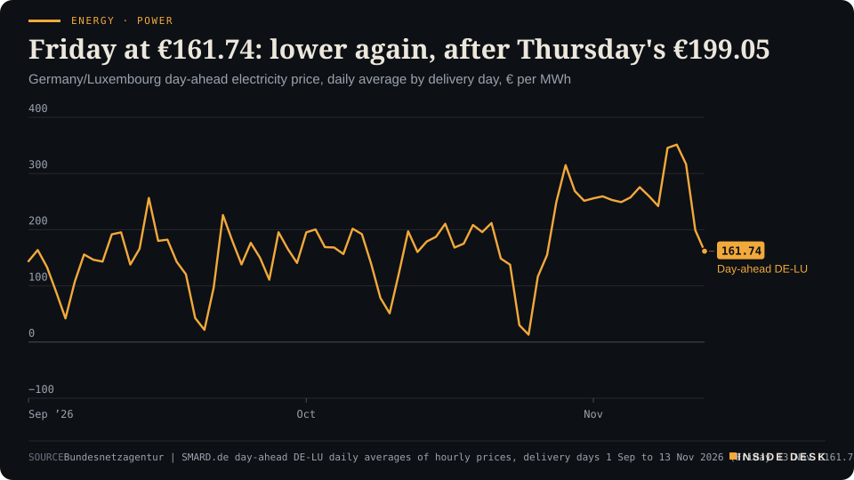
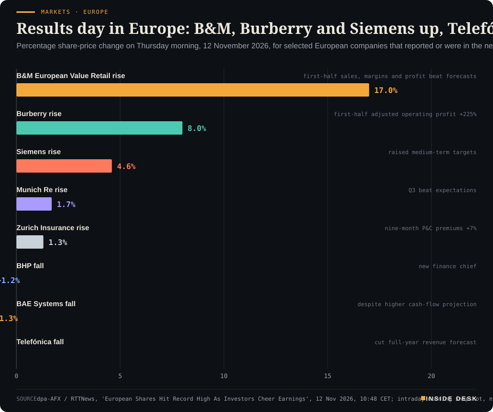

Inside Desk ePaper, Evening ePaper · Thu 12 Nov 2026
Thursday, 12 November 2026Always free
Inside Desk
Evening ePaperPublished 17:33 CET · Berlin
Lead · Energy & Industry
The forecast wind arrived almost to the gigawatt-hour and Friday's power got cheaper; the forecast held, and the auction priced it in. Also: the DAX touches 27,000 on order books, Britain's 0.7% quarter, the budget committee's late night, Munich Re's quieter quarter and a new drug for a rare cancer.
Energy · PowerFriday at €161.74: lower again, after Thursday's €199.05Germany/Luxembourg day-ahead electricity price, daily average by delivery day, € per MWh

Line chart of the daily average German-Luxembourg day-ahead electricity price from 1 September to 13 November 2026, in euros per megawatt hour. It falls to €13.12 on Sunday 25 October, climbs to €314.85 on Thursday 29 October and stays between €242.13 and €275.64 from 2 to 8 November. It reaches a record €351.48 on Tuesday 10 November, eases to €316.65 on Wednesday 11 November and drops to €199.05 on Thursday 12 November. The latest value is €161.74 for delivery on Friday 13 November, €37.31 below Thursday and the lowest delivery day since €155.12 on Tuesday 27 October.
Source: Bundesnetzagentur | SMARD.de day-ahead DE-LU daily averages of hourly prices, delivery days 1 Sep to 13 Nov 2026 (Friday 13 Nov €161.74, auction of 12 Nov), retrieved 12 Nov 2026, 16:31 CET · CC BY 4.0 · CSV
Geo-economics · p. 5
Markets & Macro · p. 6
Climate & Weather · p. 17
The day in one sentenceA reinsurer counted its disasters and found them within budget, England paid for a new cancer drug on the day it was licensed, and volunteers in Scotland carried 3,400 small flowers away from the sea: a day of careful work done on time.
ContentsInside Desk · Evening ePaper12 November 2026
The forecast wind arrived almost to the gigawatt-hour and Friday's power got cheaper; the forecast held, and the auction priced it in. Also: the DAX touches 27,000 on order books, Britain's 0.7% quarter, the budget committee's late night, Munich Re's quieter quarter and a new drug for a rare cancer.
11 edition pieces · 11 desks · Published 17:33 CET, 12 November 2026
22 ePaper extras, added , 12 November. They appear only in the ePaper and carry their own time.
17:30 Evening ePaper, updated live until 22:30 with an “Updated” time and a Latest page
Sun 10:00 The Sunday Magazine
Berlin time. Every issue is free.
How to read it
Swipe, use the arrow keys or the page strip. Tap any headline for the reading view. Press / to search, t for contents, +/− to zoom. Download the PDF.
LatestInside Desk · Evening ePaper12 November 2026
Latest
Live: this page and the issue are updated until 22:30 Berlin time.
Evening ePaper published. No updates yet.
LeadInside Desk · Evening ePaper12 November 2026
Energy & Industry · Lead · 3 min
Thursday's forecast said the wind would come. By mid-afternoon the grid's own meters agreed to within about 1%, and Friday's power cleared cheaper still.
This morning we told you the wind would arrive on Thursday, mostly after dark, and that the price had already been set on that expectation. By mid-afternoon the regulator’s meters had their say. Between midnight and 15:00, onshore and offshore wind together produced about 199.5 GWh, against about 197.5 GWh forecast for the same hours2. Desk arithmetic: that is about 1% more than promised. In fifteen hours, Thursday’s wind had already produced more than the whole of Wednesday, when SMARD records about 147.1 GWh2.
The mix was not quite as drawn. Onshore turbines delivered about 108.6 GWh, roughly 11% less than forecast, while offshore turbines delivered about 90.9 GWh, roughly 21% more2. Desk arithmetic, both. The total held because the sea made up what the land missed. That is how a portfolio is meant to work, and it is a dull, reassuring thing to see in a grid.
Friday clears lower again. The day-ahead auction held on Thursday for delivery on Friday 13 November settled at an average of €161.74 per megawatt hour for Germany and Luxembourg1. Thursday’s delivery day averaged €199.05; Tuesday’s set a record at €351.481. Desk arithmetic: Friday is €37.31, or about 19%, below Thursday, and about 54% below Tuesday. It is the lowest delivery day since Tuesday 27 October, when the average was €155.121.
Energy · PowerFriday at €161.74: lower again, after Thursday's €199.05Germany/Luxembourg day-ahead electricity price, daily average by delivery day, € per MWh
Line chart of the daily average German-Luxembourg day-ahead electricity price from 1 September to 13 November 2026, in euros per megawatt hour. It falls to €13.12 on Sunday 25 October, climbs to €314.85 on Thursday 29 October and stays between €242.13 and €275.64 from 2 to 8 November. It reaches a record €351.48 on Tuesday 10 November, eases to €316.65 on Wednesday 11 November and drops to €199.05 on Thursday 12 November. The latest value is €161.74 for delivery on Friday 13 November, €37.31 below Thursday and the lowest delivery day since €155.12 on Tuesday 27 October.
Source: Bundesnetzagentur | SMARD.de day-ahead DE-LU daily averages of hourly prices, delivery days 1 Sep to 13 Nov 2026 (Friday 13 Nov €161.74, auction of 12 Nov), retrieved 12 Nov 2026, 16:31 CET · CC BY 4.0 · CSV
A day with a dip in the middle. Friday’s shape is different from Thursday’s. The cheapest hour is 12:00, at €90.51; the four hours from 10:00 average about €99.641. The dearest is 17:00, at €226.20, and the four hours from 16:00 average about €217.081. The night is in between: the six hours from midnight average about €140.571. Desk arithmetic, all three averages. Teatime is still the hour the country pays for, when people come home, the lights go on and the sun has gone.
What we do not yet know. We cannot tell you why Friday’s midday is cheap. When we checked at 16:31 CET, SMARD had not yet published its wind and solar forecast for Friday2. It would be easy to say “the wind again” or “a bit of sun”. It would also be a guess, and this desk does not print guesses as explanations. The forecast will be there by morning, and so will our answer.
Gas is the counterweight. Not everything pulls the same way. …
Geo-economicsInside Desk · Evening ePaper12 November 2026
Geo-economics · 2 min
London says it is now the first country to have sanctioned all ten of Russia's largest oil producers, plus shadow-fleet tankers, coal companies and Vostok Oil.
On Thursday Britain imposed sanctions on the Russian oil producer Slavneft and a range of energy-related entities and vessels, and said it had become the first country to target all of Russia’s ten largest oil producers, Reuters reports2. The package, announced as Prime Minister Andy Burnham arrived at the European Political Community summit in Dublin, also covers shadow-fleet vessels carrying Russian oil and LNG, major coal companies, and Rosneft’s flagship Arctic oil and gas project, LLC Vostok Oil1.
The government’s own framing is about plumbing, not fireworks: the UK says it now targets “nearly every part of the energy revenue chain” across oil and gas, from producers and trading networks to supply chains and vessels1. Burnham called it “a sweep of stinging new sanctions to turn the screws on Russia’s oil revenues”, and said that “now is not the time for complacency” after the Abu Dhabi talks1.
Timing matters here. The listing came on the same day US envoys sat with Vladimir Putin in Moscow, and while the Guardian’s live coverage reported Putin repeating his demand to keep occupied territory3. London’s message to Dublin is that pressure and negotiation are meant to run in parallel, and that Europe should “play its full part in negotiations but also maintain pressure on Russia”1.
The sober caveat is that a designation is a starting line. Its effect depends on banks, insurers, port agents and charterers refusing business that would now breach UK law, and on whether other jurisdictions follow, so that barrels cannot simply be rerouted through counterparties beyond London’s reach. That is invoice-level work, and it is done by compliance desks rather than prime ministers.
For you, the practical point is narrow: a British listing is not a price signal on its own, and the effect on oil revenue will show up in shipping and trade data, not today’s headlines. Nothing here is investment advice.
Geo-economics · Short item · ePaper extra, added
Iran's Revolutionary Guards say two tankers were disabled in the southern Strait of Hormuz overnight; state media says they hit naval mines.
Two oil supertankers were disabled by “massive” explosions in the Strait of Hormuz on Wednesday night after ignoring warnings against using an “unauthorised route”, Iran’s Revolutionary Guards Navy said on Thursday, Reuters reports2. Iranian state media later said the tankers “exploded after hitting naval mines”2. According to the IRGC Navy statement carried by ISNA, the two vessels were transiting the southern part of the strait and carried a combined cargo of “more than 4 million barrels of oil”1. The statement did not name the ships1.
The warning attached to it is the part shipowners will read twice. …
Geo-economics · Brief · ePaper extra, added
China’s commerce ministry said on Thursday it hoped the United States would work with it so that their $60 billion tariff-reduction arrangement comes into effect “as soon as possible”, creating more favourable conditions for agricultural trade, Reuters reports1. Spokesperson He Yadong said the two sides keep close communication on implementation1. Last week the ministry said Beijing was open to buying more US farm goods, but only if the agreed “$30 billion-for-$30 billion” reciprocal arrangement is implemented1. That is the sound of a deal moving from the podium to the customs schedule, which is where trade agreements either become real or quietly don’t. For farmers on both sides, the date the tariff lines change matters more than any summit photograph. Nothing here is investment advice.
Markets & MacroInside Desk · Evening ePaper12 November 2026
Markets & Macro · 2 min
The DAX crossed 27,000 for the first time on Thursday. The speeches about AI were elsewhere; Frankfurt was reading quarterly reports.
Germany’s DAX crossed 27,000 points for the first time on Thursday morning, touching a record of about 27,001 before slipping just below it by midday1. The pan-European Stoxx 600 was up 0.4% at 665.79 by mid-morning, a fresh record after Wednesday’s record close2. These are intraday figures; the settled closes come after 17:30 CET.
The reason was paperwork. Not a summit, not a speech. Stoxx 600 companies are on track for quarterly profit growth of 25%, the strongest in four years, according to LSEG data reported by Reuters, with energy companies a large part of it3. Siemens rose 4.6% after raising its medium-term targets and beating expectations in its fourth quarter2; its order intake passed €100 billion in a record financial year1. Allianz, Munich Re and Merck KGaA all rose after results or raised outlooks2,4.
Markets · EuropeResults day in Europe: B&M, Burberry and Siemens up, Telefónica downPercentage share-price change on Thursday morning, 12 November 2026, for selected European companies that reported or were in the news, snapshot as reported by dpa-AFX/RTTNews at 10:48 CET

Bar chart of share-price moves on Thursday morning 12 November 2026, as reported by dpa-AFX/RTTNews at 10:48 CET: B&M European Value Retail up 17 percent, Burberry up 8 percent, Siemens up 4.6 percent, Munich Re up 1.7 percent, Zurich Insurance up 1.3 percent, BHP down 1.2 percent, BAE Systems down 1.3 percent and Telefónica down 2.3 percent. These are morning snapshot moves, not closes.
Source: dpa-AFX / RTTNews, 'European Shares Hit Record High As Investors Cheer Earnings', 12 Nov 2026, 10:48 CET; intraday morning snapshot, not closing levels; retrieved 12 Nov 2026 · reported figures · CSV
Markets & Macro · Short item · ePaper extra, added
A parent company placed part of its stake overnight. The shares it sold went up anyway.
Fresenius has placed 13.4 million shares of Fresenius Medical Care, the dialysis group, at €39.00 each, raising about €524 million, according to a company notice on Thursday morning1. Its share of FMC’s capital falls from 25% to 20%1. …
Markets & Macro · Brief · ePaper extra, added
Shares in Adecco, the Swiss staffing company, rose nearly 15% on Thursday morning after third-quarter profit beat forecasts and permanent recruitment returned to growth1. In the same report, B&M European Value Retail jumped 17% on first-half sales, margins and profit, while Wizz Air fell nearly 1% after warning of higher costs and reporting first-half profit down by two-thirds1.
Staffing firms see the labour market before the statistics do: an employer asks for a permanent hire only when it expects the work to last. One quarter at one company is not a trend. It is, however, a payroll decision someone actually made, which is worth more than a forecast about one. Nothing here is investment advice.
Politics & InstitutionsInside Desk · Evening ePaper12 November 2026
Politics & Institutions · 2 min
IT trouble pushed the Bundestag's clean-up session from 11:00 to 14:00. The big compromises are done; the electricity-tax cut for all still has no money behind it.
The most powerful committee in the Bundestag started its most important day with a computer problem. The budget committee’s clean-up session (Bereinigungssitzung) on the 2027 budget was moved from 11:00 to 14:00, according to an email from the committee secretariat seen by dpa: IT restrictions were slowing the processing of the large number of short-notice amendment sheets, with more still coming in1.
Those amendment sheets (Deckblätter) are the unglamorous point of the exercise. The coalition leaders settled the big quarrels on Wednesday; now every minister has to appear once more and defend their spending, and several million euros usually move around before the budget gets the green light late at night2. Deutschlandfunk notes that these sessions typically run into the early hours of the next day, and that the latest tax estimate feeds into the final changes3.
The frame is large. Under the coalition’s plans, core spending is around €555 billion, the most the federal government has ever spent, financed partly with €118.7 billion in new borrowing; with the credit-financed special funds for infrastructure and the Bundeswehr, total debt is expected to exceed €200 billion2. The finance ministry says it closed an initial gap of about €34 billion, though not only through savings: through a sugar tax, a plastic-packaging tax, higher tobacco tax and more tax on alcohol and crypto assets, several of which have since been reopened2.
What is still open is the electricity-tax cut for all firms and households that the Union wants, because nobody has found the money; dpa says it could in theory be decided after the session1. Handelsblatt calls finding the roughly €5 billion needed for 2027 “extremely unlikely”2. To balance the books, more may have to come out of a reserve that was meant to be kept for 2028, a year whose financial plan already has a hole of more than €25 billion2.
For you, the useful document is not tonight’s press statement but the committee’s printed list of changes. …
Politics & Institutions · Short item · ePaper extra, added
Binding language and development checks in daycare are now federal law in waiting. Who pays the educators is the next argument.
The Bundestag on Thursday passed, by a large majority, a law meant to improve support for children from daycare age onwards1. Its core is a set of binding and largely uniform tests to spot language weaknesses and other developmental gaps early1. …
Romanian prosecutors said on Thursday they had indicted Călin Georgescu, the pro-Russian former frontrunner in the country’s cancelled 2024 presidential election, on charges of orchestrating a €1.1 million fraud scheme, Reuters reported1. Prosecutors say he ran an organised crime group that led a Romanian businessman to hand over €1.1 million in the belief they could get him a credit line of up to €15 million from a foreign financial institution1. Georgescu has been in pretrial detention since late September; his wife, Cristela Georgescu, denied the charges on his Facebook account and called them politically motivated1. An indictment is an accusation, not a verdict. The point worth noticing is the venue: the claim will now be tested by a court, with evidence and a defence, which is exactly where it belongs.
Psychology & BehaviourInside Desk · Evening ePaper12 November 2026
Psychology & Behaviour · 2 min
A Scientific Reports study measured not how long people slept but how regularly. The gradient is real; the arrow between sleep and mood is not yet settled, and the authors say so.
The Annex reads the method behind the headline. Today’s: a study led by UC San Francisco and UC San Diego, published in Scientific Reports on 12 November, which asks whether people who go to bed and get up at irregular times report more depression, anxiety and loneliness1. Most sleep research looks at how long and how well people sleep; this one looks at regularity1.
The design. About 23,000 participants from TemPredict, a study launched in 2020 to see whether wearables could flag COVID-19 before symptoms, wore a smart ring that estimated when they fell asleep and woke1. They contributed an average of 154 days of sleep data1. From that, the team calculated a sleep regularity index (SRI) from 0 to 100, higher meaning more consistent1. Depression, anxiety and loneliness came from a monthly self-reported survey1. The average participant was 46, and just under half were women1. The team also built a “typical week” snapshot to compare with earlier, much shorter studies, and found the associations were stronger in the longer-term data1.
The result. A clean gradient. People with few or no depressive symptoms averaged an SRI of 84; mild symptoms, 83; moderate, 81; severe, 751. On anxiety, 84 for normal levels against 79 for severe1. Elevated loneliness also went with less regular schedules1. In plain terms, first author Severine Soltani says an SRI of 84 means bed and waking times roughly an hour earlier or later than the day before, on average; at 75, closer to an hour and a half1.
The footnote that matters. This is an association, and the senior author, Ashley Mason, says the link “could be bidirectional”: irregular sleep may also be a symptom of poor mental health1. …
Psychology & Behaviour · Short item · ePaper extra, added
A study of 4,219 children links weekly trips to the park with better social-emotional development, even after adjusting for family circumstances.
Children taken to the park at least once a week from birth to the age of 11 scored, on average, 16.5% higher in mental-health assessments than those who went less than once a week, according to a study in the journal Epidemiology and Community Health, reported by Euronews1. The study followed 4,219 participants and focused on social-emotional development: managing feelings, building relationships, behaving appropriately, coping with everyday problems1. …
Researchers at Flinders University examined 1,065 posts in Reddit’s r/mentalhealth community and the highest-ranked visible reply to each, comparing the advice with international and Australian clinical guidance, in the Journal of Medical Internet Research1. The most common recommendation for both depression and anxiety was to seek professional help1. Where replies fell short was in crisis: some “were less clear about how urgently they needed it or what they should do next,” says senior author Peivand Bastani1. The sample covers about one month in a single English-language community, and the study did not measure what readers then did1.
For you: a stranger’s kind reply is a good start and a poor triage system. If someone you know writes that they are in serious distress, the next step is a phone call to a professional or an emergency line, today.
Energy & IndustryInside Desk · Evening ePaper12 November 2026
Energy & Industry · Short item · ePaper extra, added
Iran's Revolutionary Guards said two tankers were disabled in Hormuz overnight. Brent still slipped on Thursday morning, because more oil is being pumped.
Two oil supertankers were disabled by large explosions after hitting naval mines in the Strait of Hormuz on Wednesday night, Iran’s Revolutionary Guards Navy said on Thursday; it said the ships had ignored warnings against using an “unauthorised route”1. Other tankers in the waterway are still burning, and oil is washing ashore1.
And yet the screen went the other way. By 10:46 CET on Thursday, Brent crude was down 37 cents, or 0.4%, at $92.39 a barrel, with US crude down 0.43% at $86.16; both had fallen more than $1 in early Asian trade and were heading for a weekly fall1. The reason given was supply, not peace: OPEC+ crude production rose in October, led by higher Saudi output despite the disruption in the strait1. Growing US inventories added to the weight2.
Two stories at once. “Market players are vacillating between tentative truces in Ukraine and the Middle East and the ongoing atrocities against energy infrastructure and ships,” said Tamas Varga of the broker PVM1. That is a fair description of a market reading two newspapers at the same time.
What to watch. The US Energy Information Administration’s weekly oil and product stocks were due on Thursday, a day late because of a national holiday1. That table, not a statement from a navy, is what tells you whether the barrels are really piling up. Nothing here is investment advice.
Energy & Industry · Brief · ePaper extra, added
The Dutch TTF front-month contract, Europe’s gas benchmark, rose 2% to €88.42 per megawatt hour early on Thursday, its third straight daily gain since touching a one-month low earlier in the week1. Britain’s NBP contract rose 1.7% to 219.00 pence per therm1. In the same hours Brent crude fell $1.47, or 1.58%, to $91.29 a barrel1.
The split has a plain explanation: the heating season has started, and traders are pricing near-term supply security ahead of any long-term relief from talks over Ukraine or the Gulf1. A ceasefire would matter for next year’s contracts; this month’s gas still has to be in the pipes.
For you, a three-day move on a trading screen is not a bill. Household tariffs are bought far ahead. Nothing here is investment advice.
Money, FX & CommitteesInside Desk · Evening ePaper12 November 2026
Money, FX & Committees · Podium vs Print · 2 min
Britain grew 0.7% in the third quarter, and the chancellor said so with relish. The same release has a line about new homes that did not make the speech.
Podium
“standout resilience”
John Healey, Chancellor of the Exchequer (as reported by The Guardian), Thursday 12 November 2026, after the ONS GDP release
Print−4.7%
Within new construction work, the largest negative contribution came from private housing new work, which fell by 4.7% in the quarter, while total construction output fell 0.7%.
Office for National Statistics, GDP first quarterly estimate, July to September 2026, Thursday 12 November 2026, 08:00 CET
The podium. Britain’s economy grew 0.7% between July and September, the fastest quarter since early 2024, and Chancellor John Healey said the country was showing “standout resilience”2. He is not wrong on the headline. The Office for National Statistics put GDP 1.9% higher than a year earlier, with growth of 0.2% in September alone1.
The print. The same bulletin has a less cheerful section. Construction output fell 0.7% in the quarter and is 1.7% lower than a year ago1. New work fell 1.6%, and the largest drag inside it came from private housing new work, down 4.7%1. August’s growth was revised down from 0.1% to zero1. The engine was elsewhere: information and communication grew 2.1%, led by computer programming and consultancy, which the ONS says has been the largest driver of growth across 20261.
The gap. “Resilience” is a word about the whole. The table is a word about each part. An economy can grow fast on data centres and back-office software while building fewer new homes, and both can be true on the same morning1,2. A podium tends to quote the total; a household tends to live in one of the rows.
For you. If you rent or are saving for a first home, the 4.7% matters more than the 0.7%: less private housebuilding is a supply line, not a mood. And a strong headline cuts both ways. Suren Thiru, chief economist at the accountancy body ICAEW, said the figures keep a Bank of England rate rise “firmly on the table” for December2. Nothing here is investment advice.
Money, FX & Committees · Short item · ePaper extra, added
Britain's growth figure was welcomed on Thursday. For borrowers, it was also an argument for another rise in December.
Last week the Bank of England raised interest rates by a quarter point, to 4%, to cool inflation1. On Thursday the statisticians said the economy had grown 0.7% in the third quarter2. Put those two facts side by side and you have the argument economists were making on Thursday morning.
The case for another rise. “These robust figures help keep a December interest rate rise firmly on the table,” said Suren Thiru, chief economist at the accountancy body ICAEW1. The National Institute of Economic and Social Research went further: “Further rate rises are needed to keep inflation contained,” said its economist Fergus Jimenez-England1.
The case for patience. Simon Pittaway of the Resolution Foundation said Britain’s resilience “will be severely tested” in the coming months by rising inflation and interest rates1. Households, Thiru noted, appear to have drawn on savings to keep spending1. Real household consumption rose 0.6% in the quarter2.
What drives it. Inflation has risen this year mostly because of motor fuel, with petrol above £1.70 a litre and diesel near £2, and the ONS said wholesale electricity prices were about double a year ago1.
For you. If your fixed-rate mortgage ends in the next few months, a strong growth number is not good news for your next rate; it is a reason the Bank may not be finished. That is not a forecast of ours. It is what the people quoted above said in public on Thursday, and the Bank will answer in December. Nothing here is investment advice.
Money, FX & CommitteesInside Desk · Evening ePaper12 November 2026
Money, FX & Committees · Brief · ePaper extra, added
New claims for US unemployment benefits rose by 9,000 to 200,000 in the week ending 7 November, the Labor Department said on Thursday1. The previous week was revised up by 2,000, to 191,000, and the four-week moving average was unchanged at 195,2501.
Desk arithmetic: in the four weekly reports since mid-October, the headline number has moved between 189,000 and 200,0001. A single week’s rise is noise; a flat four-week average is the signal. Employers are not, on this evidence, letting people go in larger numbers.
For you, that matters through the dollar and through the Federal Reserve, which is weighing how tight the labour market still is. Nothing here is investment advice.
Ordinary & Inherited LifeInside Desk · Evening ePaper12 November 2026
Ordinary & Inherited Life · 2 min
The default suppliers are writing to households about 1 January. The letter matters less than the clause behind it: if your price goes up, you may walk on that day without notice.
This morning’s Ledger was about the pump. Tonight’s is about the meter, because the default suppliers have started writing to households about 1 January.
In Cologne, RheinEnergie announced yesterday that it will raise prices for default-supply customers and older contracts without a fixed term1. For gas, the unit price rises by 1.45 cents to 13.79 cents per kilowatt hour, with the standing charge unchanged at €172.55 a year; on 12,000 kWh that is about €14.50 a month more, a rise of roughly 10.5%1. For electricity, the same company has two answers in one city: in the RheinNetz grid area the unit price rises by 3.4 cents to 34.88 cents (about €5.95 a month on 2,100 kWh, +7.6%), while in the Westnetz area it rises by 2.39 cents to 39.77 cents (about €4.20 a month, +5.2%)1. The reason, it says, is that regulated grid fees went up in one area and down in the other1. Desk arithmetic: 12,000 kWh × 1.45 cents = €174 a year, or €14.50 a month, which matches the company’s figure.
Down the Rhine, Stadtwerke Düsseldorf announced on Tuesday that its default gas unit price rises by 1.59 cents per kWh from 1 January while the standing charge falls by €2.17 a year; for 11,500 kWh it puts the extra cost at about €15 a month, or about €180 a year2. It credits long-term purchasing for softening the blow2.
They are not alone. A tracker of default suppliers lists announced 1 January changes at Stadtwerke Hamm, EnBW, EWE, Harz Energie, LEW and lekker, and notes that “all announced changes are increases”3. EWE’s gas, for example, goes from 11.01 to 12.90 cents per kWh3.
Now the dull machinery that protects you. Price changes in default supply must be published and sent by letter at least six weeks in advance, which for 1 January means by 20 November3. And customers may cancel without notice to the day the change takes effect3. RheinEnergie also points out that fixed-term contracts within their price guarantee are not affected1.
For you: find your last bill, see which tariff you are on, and when the letter comes, compare before you shrug. Nothing here is investment advice.
Ordinary & Inherited Life · Short item · ePaper extra, added
The price changes announced for New Year point one way. Eight days remain for the rest to write.
A tracker that checks default suppliers’ websites every week, updated today, lists six that have announced price changes for 1 January 2027, covering eleven electricity and gas tariffs; every one is an increase1. Its annual costs assume 3,500 kWh of electricity and 12,000 kWh of gas1.
The spread is wide. …
Ordinary & Inherited Life · Brief · ePaper extra, added
An email titled “Ihre Rückerstattung über + 102,99 € ist bereit” claims that the comparison site CHECK24 found a billing error and will refund the amount to your card within minutes1. It has nothing to do with the company; the consumer advice centre calls it phishing and first warned about it on Monday1. Recipients are asked to confirm card details and then approve a “transaction” in their banking app; a line at the bottom promises nothing will be debited1.
For you: real refunds arrive without your card number. Check only via the official app or website; if you have entered card details, call your bank and block the card on 116 1161.
Tech & ComputeInside Desk · Evening ePaper12 November 2026
Tech & Compute · 2 min
Siemens booked a record quarter of orders, led by electrification for data centres and a German rail order. The useful number is not the AI slogan but the backlog of €143 billion.
The cleanest reading of the AI boom today came not from a chip designer but from a Munich engineering group. Siemens reported its fiscal fourth quarter, to 30 September, this morning, and its orders rose 58% to a quarterly record of €34.77 billion1. Revenue rose 11% to €23.68 billion; net profit rose to €2.43 billion from €1.84 billion1. The order backlog reached €143 billion, and the book-to-bill ratio 1.471. Desk arithmetic: €34.77bn ÷ €23.68bn ≈ 1.47, so for every euro billed, almost a euro and a half of new work came in.
Look at where the orders came from. Smart Infrastructure, which sells the electrical kit that keeps buildings and grids running, grew revenue 16% to €7.24 billion and orders 40%, helped by large data-centre contracts, particularly in the US and Europe1. Mobility’s orders more than quadrupled on big German rail contracts, including a €2.4 billion order for high-speed trains1. Digital Industries, the automation business, lifted revenue 11% and profit 50%, mostly on operational improvements1. Industrial profit reached a record €3.90 billion, with the margin up to 16.8% from 15.3%1.
That is the contrarian point worth keeping. The loudest AI claims are about models; the money Siemens is taking in is for switchgear, power distribution, automation and trains, the dull machinery that a data centre or a timetable needs before any model runs. Siemens itself has raised its medium-term growth targets and says it wants to seize the chances of industrial artificial intelligence1. Its own drivers for next year are investment in AI and digital infrastructure, government programmes and a pick-up in industrial activity1.
For fiscal 2027, Siemens guides to comparable revenue growth of 9% to 11% and earnings per share before purchase-price allocation of €10.20 to €10.801. For the full year, net profit fell 9% to €9.47 billion, because the year before included a €2.1 billion gain from selling Innomotics; revenue rose 6% to €83.37 billion1. The proposed dividend rises to €5.50 from €5.351. Shares were 4.2% higher on Tradegate early this morning2.
Tech & Compute · Short item · ePaper extra, added
The Commerce Department is reported to be finalising rules that would require licences for Blackwell-class chips in Singapore, Malaysia and five others, and curb remote access from China.
The US Commerce Department’s Bureau of Industry and Security is finalising an expansion of its chip export controls to seven more countries, Singapore, Malaysia, Thailand, Indonesia, Brazil, Norway and South Africa, according to The Information, as reported by Chosun Biz1. The rules could be announced as early as this month1.
Under the plan, those countries would need Commerce approval to import Nvidia’s Blackwell-class and more advanced AI chips; recipients would have to report who gets the chips and how they are used, and face ongoing oversight1. Data centres run by US companies there could be exempt from licensing if they block remote access from US arms-embargoed countries such as China and Russia and report customers’ countries and the scale of computing1. Similar licence requirements already apply in some countries, including Saudi Arabia and Vietnam1.
The target is a workaround: Chinese companies training models on banned chips by renting capacity in third-country data centres1. The report lands as Congress scrutinises the department over a halted probe into Megaspeed, a Singapore firm suspected of routing advanced chips to Chinese users, and as lawmakers try to fold three export-control bills into the defence authorisation act1. None of this is final until it is published.
For you: in the AI race, the binding constraint is increasingly paperwork, licences, end-user reports, audits. That is not glamorous, and it is how rules actually bite.
Tech & ComputeInside Desk · Evening ePaper12 November 2026
Tech & Compute · Brief · ePaper extra, added
The Node.js project has fixed 16 vulnerabilities, seven rated high, in versions 22.23.5, 24.22.3 and 26.13.11. One lets an unauthenticated client crash a default HTTP/2 server on the 24.x and 26.x lines; another, in HTTPS servers under specific conditions, can leak memory from other connections, “including TLS private keys and other users’ requests,” the project says1. Updating is the only fix listed; there is no workaround, and end-of-life lines such as 20.x and 25.x get no patch1. The advisory reports no attacks so far1.
For you: if you run Node.js on the internet, the boring task tonight is the important one. Update, and if you are still on 20.x, plan the move.
Health & CareInside Desk · Evening ePaper12 November 2026
Health & Care · 2 min
NICE recommended retifanlimab with chemotherapy on the same day the regulator licensed it. The speed is the news; the modest numbers are the honesty.
England’s health technology assessor, NICE, on Thursday recommended retifanlimab (brand name Zynyz, made by Incyte) together with platinum-based chemotherapy for adults with anal canal cancer that has spread and cannot be removed by surgery1. It is the first time NICE has recommended a drug for this form of the disease, and the treatment is available on the NHS from today1. About 250 people in England could benefit, NICE estimates1.
The numbers, plainly. In trials, people given retifanlimab with carboplatin and paclitaxel had on average 9.3 months before the cancer worsened, against a median of 7.4 months with placebo and chemotherapy1. Average survival was 32.8 months, almost three years, against 22.2 months on chemotherapy alone, with some patients responding for much longer1. Desk arithmetic: that is about 10.6 months more survival, and about 1.9 months more before the disease progresses, on the trial figures as NICE reports them. Not a cure; more time.
Why it matters beyond the 250. Around 1,600 people a year were diagnosed with anal cancer in the UK between 2017 and 2019, two-thirds of them women, and HPV infection is linked to about 90% of UK cases1. Once it has spread, only around 20% live five years, against around 90% when it has not1. That gap is the argument for two dull things at once: earlier diagnosis of a cancer that patient experts told NICE is too little known, and prevention of the infection behind most cases.
The machinery. NICE published its guidance at the same time as the medicines regulator, the MHRA, granted the licence, and says it now publishes guidance for medicines 30% faster than before April 20241. …
Health & Care · Short item · ePaper extra, added
Danish researchers saw infant admissions for the virus plummet after the country began vaccinating pregnant women. The harder job now is reaching the countries where most RSV deaths happen.
“Something’s wrong with the data. There are too few people in hospitals,” a colleague told the Danish epidemiologist Caroline Klint Johannesen while they analysed health records for last winter, she recalls in a Nature news report published on Thursday1. Nothing was wrong. On 1 October 2025, Denmark began vaccinating pregnant women against respiratory syncytial virus (RSV) nationwide; the mother’s antibodies cross the placenta and protect the baby for roughly its first six months1. …
Health & Care · Brief · ePaper extra, added
Some hospitals will run short of money in the coming years, Lower Saxony’s health minister Andreas Philippi (SPD) told dpa on Thursday, and he wants a federal rescue fund to keep needed rural clinics going until the hospital reform starts to bite in 2028/20291. He named no sum1. The state’s hospital federation says the loss of an invoice surcharge from November costs its clinics about €400 million a year, against a promised €55 million of relief from 20271.
Philippi also made the reform’s case: of 130 hospitals in the state, almost 100 fit artificial joints, which he calls overcapacity driven by finance rather than need1. Lower Saxony will assign the reform’s service groups only by the end of September 2027, taking longer to avoid the lawsuits other states attracted1. Slower paperwork, fewer court cases: a trade worth making.
Security & OrderInside Desk · Evening ePaper12 November 2026
Security & Order · 2 min
Putin thanked Washington, offered a humanitarian mission to Kostiantynivka, and called any foreign troops in Ukraine a target. The envoys fly on to Dublin.
The meeting lasted about two and a half hours, BBC Russian reports3. In the part the cameras saw, Vladimir Putin asked Steve Witkoff and Jared Kushner to pass his thanks to Donald Trump “for arranging our contacts with the Ukrainian side”, and said a positive result had been reached in at least one area, the exchange of detainees, with “another important step” now being planned1. On the Russian side sat aides Yury Ushakov and Vladimir Medinsky and the investment envoy Kirill Dmitriev1.
Two concrete offers came out of the room, via Russian agencies. Putin proposed a joint Russian–Ukrainian humanitarian mission to Kostiantynivka in eastern Ukraine, modelled on the Oleshky arrangement late last month, and said Russia needed five days to clear the area near the town of mines, Interfax reported2. The harder line came with it: Moscow would treat any foreign troops deployed in Ukraine as a “legitimate target”, which would mean “the continuation of war”2. Foreign troops are a key part of Europe’s planned guarantees for Kyiv2.
On Europe, the tone was polite and the substance unmoved. Putin said he “would like Americans to work with Europe so that they can decide what they want, peace or war”, Reuters reported via Interfax2. Kushner told him Europe wanted a role, and Witkoff said he hoped to announce later on Thursday a new round of trilateral talks “in which Europeans would take part”2. In Dublin, European Council president António Costa answered in advance: “The time of zones of influence in Europe is long gone”2.
Read it the dull way and the day still produced something. A prisoner exchange is being planned; a mine-clearing period has a number; a humanitarian corridor has a name. None of that ends the war, and the Guardian’s analysis calls Putin’s rhetoric maximalist2. …
Security & Order · Short item · ePaper extra, added
Zelenskyy says Starshield restrictions are back over occupied areas and are hurting drone interception. The Commission wants the service restored.
Volodymyr Zelenskyy said on Thursday that Starshield restrictions are back on “in the temporary occupied parts of Ukraine”, and that they “directly affect our ability to intercept Russian jet powered drones” launched from those areas1. “We are trying to get the details from the American side, but so far we know very little,” he said, adding that if someone in America treats Ukrainian territory “as if it is not Ukrainian, then this tells us where things are going”1.
The European Commission answered within hours. …
Security & Order · Brief · ePaper extra, added
Some 1,800 schools in at least ten Italian regions were targeted with fresh bomb threats on Thursday, alongside the prime minister’s office, the Guardian reports1. Unlike on previous days, the government told local authorities and head teachers to keep classes running unless there were credible grounds for alarm; several schools still evacuated as a precaution, Ansa reported1. Deputy prime minister Antonio Tajani called the hoaxes “a dangerous hybrid warfare campaign” aimed at Italy for backing Ukraine, and said: “we will not be intimidated”1. Rome prosecutors’ anti-terrorism team is investigating1. The constructive part is the instruction itself. A hoax works only if it empties the building; a school that triages the threat and keeps teaching has taken away the reward.
Climate & WeatherInside Desk · Evening ePaper12 November 2026
Climate & Weather · 2 min
The world's biggest reinsurer paid far more for natural disasters this summer than last, still beat its own expected loss and raised its profit target. The costliest event was an earthquake, which is a lesson in itself.
Munich Re, the world’s largest reinsurer, reported on Thursday that natural catastrophes cost it €514 million in the third quarter, after retrocession and before tax1. In the same quarter last year it booked a release of €47 million, meaning old provisions turned out larger than needed1. So the summer of 2026 was not cheap for the people who insure the insurers. And yet the company called its major-loss expenditure “below average expectations”1.
The ratio that tells you. All major losses, natural and man-made, came to €646 million, against €118 million a year earlier1. That was 14.9% of net insurance revenue in property-casualty reinsurance, below the 18% the company budgets for in an average quarter1. The combined ratio, the share of each premium euro spent on claims and costs, was 80.0%, against an unusually low 62.7% a year earlier1. Munich Re now expects the full-year figure in that business to be below 80% and has raised its 2026 profit target from €6.3bn to €6.6bn1.
The costliest event was not the weather. The largest single natural disaster of the quarter for Munich Re was the El Choco earthquake in Colombia, with nominal losses of about €0.3bn1. That is worth remembering on a desk called Climate & Weather: the reinsurer’s nature bill is a portfolio of storms, floods, fires and the earth moving under a city, and a single event can outweigh a season of weather.
Where the growth came from. The quarter’s fastest growth was not in catastrophe cover but in life and health reinsurance, where revenue rose to €3,769m from €2,868m; the company says it is expanding in “less volatile segments”1. Its solvency ratio stood at 301%, against a Solvency II target of more than 200%1.
Desk arithmetic: €514m in natural-catastrophe losses against a €47m release a year earlier is a swing of €561m in one line of one quarter, and the company still raised its annual target. That is what pricing, reserves and a diversified book are for: the dull machinery that turns a bad week somewhere in the world into a budgeted number in Munich. Nothing here is investment advice.
Climate & Weather · Short item · ePaper extra, added
On COP31's cities day, representatives of 53 countries were handed a buildings agreement to sign. A signature is the start; the boiler room matters more than the podium.
The climate talks in Antalya spent Thursday on cities and the built environment, and they produced something you can actually measure. At the second ministerial meeting of the Intergovernmental Council for Buildings and Climate, the Antalya Agreement on Energy Efficiency in Buildings was presented to member countries for signature1. …
Climate & Weather · Brief · ePaper extra, added
The UK Health Security Agency issued its first yellow cold-health alert of the winter for England’s North West and West Midlands, running from 10:00 CET on Thursday to 13:00 CET on Saturday1. The Met Office expects overnight lows of down to minus 6°C for some in the coming days, “a fairly harsh frost”, and a few centimetres of snow on the highest ground in northern Scotland1. Its spokesman Stephen Dixon called that “not massively unusual for this time of year”1. Up to 30mm of rain could follow widely on Sunday1.
The alert system exists for the health service as much as for you: cold raises demand on hospitals and the risk to people over 65 and those with existing conditions, the agency says, and its advice is plain: heat homes, dress warmly, and check on vulnerable neighbours1.
Charts and dataInside Desk · Evening ePaper12 November 2026
Charts and data
Energy · PowerFriday at €161.74: lower again, after Thursday's €199.05Germany/Luxembourg day-ahead electricity price, daily average by delivery day, € per MWh
Line chart of the daily average German-Luxembourg day-ahead electricity price from 1 September to 13 November 2026, in euros per megawatt hour. It falls to €13.12 on Sunday 25 October, climbs to €314.85 on Thursday 29 October and stays between €242.13 and €275.64 from 2 to 8 November. It reaches a record €351.48 on Tuesday 10 November, eases to €316.65 on Wednesday 11 November and drops to €199.05 on Thursday 12 November. The latest value is €161.74 for delivery on Friday 13 November, €37.31 below Thursday and the lowest delivery day since €155.12 on Tuesday 27 October.
Source: Bundesnetzagentur | SMARD.de day-ahead DE-LU daily averages of hourly prices, delivery days 1 Sep to 13 Nov 2026 (Friday 13 Nov €161.74, auction of 12 Nov), retrieved 12 Nov 2026, 16:31 CET · CC BY 4.0 · CSV
Latest values
Series
Value
Date
Chart
Day-ahead DE-LU
161.74
13 Nov 2026
Friday at €161.74: lower again, after Thursday's €199.05
Last data point of each series in the charts above, from the Inside Desk data archive. Sources under each chart.
Back pageInside Desk · Evening ePaper12 November 2026
Before you close the tab
The day in one sentence
A reinsurer counted its disasters and found them within budget, England paid for a new cancer drug on the day it was licensed, and volunteers in Scotland carried 3,400 small flowers away from the sea: a day of careful work done on time.
One thing you can do this week
When the first frost arrives, make one short list of the people you would check on if the heating failed or the pavement froze: an older neighbour, a relative who lives alone, a friend just out of hospital. Put a phone number next to each name and, on the first cold evening, call one of them. Five minutes, and the list is ready for the next cold night too.
A habit, not advice.
What went right
On Scotland's Moray coast, where 2 to 3 metres of land have collapsed into the sea in recent years, conservationists and 18 volunteers moved 3,400 one-flowered wintergreens, one of Britain's rarest wildflowers, to safety deeper in Culbin Forest 1. In the UK the tiny star-shaped flower grows only in pine woods in north-east Scotland, at just seven sites, and it has lost an estimated half of its UK population in 50 years 1. Because the plant depends on fungi in the soil, volunteers cut out whole sections of earth around each one to keep those networks intact 1. Plantlife Scotland, Forestry and Land Scotland and NatureScot ran the work, with money from the Scottish government's nature restoration fund 1. "Any survival will be a success," said Iain Macdonald of NatureScot 1. Nobody promised a miracle; they dug carefully, which is better.
In euros at home
If you sign a new energy contract today, it costs more than it did in January. The energy industry association BDEW puts the average household electricity price for new contracts at 40.1 cents per kilowatt hour, 2.9 cents or 8% higher than at the start of the year, and the average gas price at 14.9 cents, up 3.8 cents or 34% 2. For customers on running tariffs, whose prices were usually set at the start of the year or fixed, there has so far been no effect, BDEW says 2. Desk arithmetic: for a household using 3,500 kWh of electricity a year, BDEW's reference, 2.9 cents more is about €102 a year; for a single-family house using 20,000 kWh of gas, 3.8 cents more is €760 a year.
Average prices for contracts available to sign, BDEW Quick-Check of 10 Nov 2026 (data as of 3 Nov). Your tariff, region and consumption will differ; if you are on a fixed price, check its end date before you compare. Nothing here is advice.
Small words
Combined ratio
The share of each premium euro an insurer spends on claims and running costs. Below 100% means the insurance business itself made money before investment income; Munich Re reported 80.0% for its property-casualty reinsurance in the third quarter, against 62.7% a year earlier 3. When a reinsurer says the figure rose but stayed below plan, it means it paid out more for disasters and still priced them correctly.
Commentary for information only. Not investment, legal, tax, medical or political advice. Inside Desk is free and reader-supported. Every number is sourced in the piece it appears in.
This issue has been updated.
All articles in this edition
Energy & Industry · 3 min read
Friday at €161.74: the wind turned up as promised, and the auction kept the discount
Thursday's forecast said the wind would come. By mid-afternoon the grid's own meters agreed to within about 1%, and Friday's power cleared cheaper still.
This morning we told you the wind would arrive on Thursday, mostly after dark, and that the price had already been set on that expectation. By mid-afternoon the regulator’s meters had their say. Between midnight and 15:00, onshore and offshore wind together produced about 199.5 GWh, against about 197.5 GWh forecast for the same hours2. Desk arithmetic: that is about 1% more than promised. In fifteen hours, Thursday’s wind had already produced more than the whole of Wednesday, when SMARD records about 147.1 GWh2.
The mix was not quite as drawn. Onshore turbines delivered about 108.6 GWh, roughly 11% less than forecast, while offshore turbines delivered about 90.9 GWh, roughly 21% more2. Desk arithmetic, both. The total held because the sea made up what the land missed. That is how a portfolio is meant to work, and it is a dull, reassuring thing to see in a grid.
Friday clears lower again. The day-ahead auction held on Thursday for delivery on Friday 13 November settled at an average of €161.74 per megawatt hour for Germany and Luxembourg1. Thursday’s delivery day averaged €199.05; Tuesday’s set a record at €351.481. Desk arithmetic: Friday is €37.31, or about 19%, below Thursday, and about 54% below Tuesday. It is the lowest delivery day since Tuesday 27 October, when the average was €155.121.
Energy · PowerFriday at €161.74: lower again, after Thursday's €199.05Germany/Luxembourg day-ahead electricity price, daily average by delivery day, € per MWh
Line chart of the daily average German-Luxembourg day-ahead electricity price from 1 September to 13 November 2026, in euros per megawatt hour. It falls to €13.12 on Sunday 25 October, climbs to €314.85 on Thursday 29 October and stays between €242.13 and €275.64 from 2 to 8 November. It reaches a record €351.48 on Tuesday 10 November, eases to €316.65 on Wednesday 11 November and drops to €199.05 on Thursday 12 November. The latest value is €161.74 for delivery on Friday 13 November, €37.31 below Thursday and the lowest delivery day since €155.12 on Tuesday 27 October.
Source: Bundesnetzagentur | SMARD.de day-ahead DE-LU daily averages of hourly prices, delivery days 1 Sep to 13 Nov 2026 (Friday 13 Nov €161.74, auction of 12 Nov), retrieved 12 Nov 2026, 16:31 CET · CC BY 4.0 · CSV
A day with a dip in the middle. Friday’s shape is different from Thursday’s. The cheapest hour is 12:00, at €90.51; the four hours from 10:00 average about €99.641. The dearest is 17:00, at €226.20, and the four hours from 16:00 average about €217.081. The night is in between: the six hours from midnight average about €140.571. Desk arithmetic, all three averages. Teatime is still the hour the country pays for, when people come home, the lights go on and the sun has gone.
What we do not yet know. We cannot tell you why Friday’s midday is cheap. When we checked at 16:31 CET, SMARD had not yet published its wind and solar forecast for Friday2. It would be easy to say “the wind again” or “a bit of sun”. It would also be a guess, and this desk does not print guesses as explanations. The forecast will be there by morning, and so will our answer.
Gas is the counterweight. Not everything pulls the same way. The Dutch TTF front-month gas contract, Europe’s benchmark, rose for a third session on Thursday, climbing 2% to €88.42 per megawatt hour in early trading; Britain’s NBP rose 1.7% to 219.00 pence per therm3. Desk arithmetic: Friday’s four teatime hours cost more than twice its four lunchtime hours. How much of that gap is gas, the auction does not say. The same pressure shows across the Channel: Britain’s statistics office said on Thursday that wholesale electricity prices there were about double the level of a year ago4.
Why this is worth your attention. From 2 to 8 November every delivery day cost more than €240, and on Tuesday the average set a record1. The fall since Tuesday is not a policy, a speech or a breakthrough. It is a weather forecast, published by a regulator, priced by an exchange and then checked against meters, in public, the same day. The machinery is unglamorous. It is also what lets you see, rather than be told, whether the cheap day was real. Today it was.
For you. On a dynamic tariff, Friday’s best window is the middle of the day: from 10:00 to 14:00, every hour is below €1151. That is when the washing machine, the dishwasher and the car will cost least. Avoid 16:00 to 20:00 if you can, when every hour is above €2001. On a fixed tariff, nothing changes this week; your supplier bought months ago. Nothing here is investment advice.
Desk comment A forecast is a promise with a timestamp. Today the promise was kept, and the invoice will show it.
Ten out of ten: Britain sanctions Slavneft and completes the set of Russia's big oil producers
London says it is now the first country to have sanctioned all ten of Russia's largest oil producers, plus shadow-fleet tankers, coal companies and Vostok Oil.
On Thursday Britain imposed sanctions on the Russian oil producer Slavneft and a range of energy-related entities and vessels, and said it had become the first country to target all of Russia’s ten largest oil producers, Reuters reports2. The package, announced as Prime Minister Andy Burnham arrived at the European Political Community summit in Dublin, also covers shadow-fleet vessels carrying Russian oil and LNG, major coal companies, and Rosneft’s flagship Arctic oil and gas project, LLC Vostok Oil1.
The government’s own framing is about plumbing, not fireworks: the UK says it now targets “nearly every part of the energy revenue chain” across oil and gas, from producers and trading networks to supply chains and vessels1. Burnham called it “a sweep of stinging new sanctions to turn the screws on Russia’s oil revenues”, and said that “now is not the time for complacency” after the Abu Dhabi talks1.
Timing matters here. The listing came on the same day US envoys sat with Vladimir Putin in Moscow, and while the Guardian’s live coverage reported Putin repeating his demand to keep occupied territory3. London’s message to Dublin is that pressure and negotiation are meant to run in parallel, and that Europe should “play its full part in negotiations but also maintain pressure on Russia”1.
The sober caveat is that a designation is a starting line. Its effect depends on banks, insurers, port agents and charterers refusing business that would now breach UK law, and on whether other jurisdictions follow, so that barrels cannot simply be rerouted through counterparties beyond London’s reach. That is invoice-level work, and it is done by compliance desks rather than prime ministers.
For you, the practical point is narrow: a British listing is not a price signal on its own, and the effect on oil revenue will show up in shipping and trade data, not today’s headlines. Nothing here is investment advice.
Desk comment Sanctions are not a speech. They are a list, and the list is only as strong as the clerks who check it.
Two supertankers, more than four million barrels, and an "unauthorised route"
Iran's Revolutionary Guards say two tankers were disabled in the southern Strait of Hormuz overnight; state media says they hit naval mines.
Two oil supertankers were disabled by “massive” explosions in the Strait of Hormuz on Wednesday night after ignoring warnings against using an “unauthorised route”, Iran’s Revolutionary Guards Navy said on Thursday, Reuters reports2. Iranian state media later said the tankers “exploded after hitting naval mines”2. According to the IRGC Navy statement carried by ISNA, the two vessels were transiting the southern part of the strait and carried a combined cargo of “more than 4 million barrels of oil”1. The statement did not name the ships1.
The warning attached to it is the part shipowners will read twice. The IRGC said any ship in the Gulf or the strait that switches off its navigation systems and cooperates with US forces to use the southern route “would face the same fate”1. Reuters notes a shift in the pattern: early in the war Tehran announced direct strikes on tankers; more recently it reports ships catching fire after hitting mines on the “unauthorised route”, while in several cases the UK Maritime Trade Operations agency has said ships were struck by unknown projectiles2.
The verified facts are fewer than the claims: two ships, one route, one statement of responsibility, and no names yet. Until the owners, flags and insurers speak, treat the number as Tehran’s and the damage as unconfirmed. Nothing here is investment advice.
Appears only in the ePaper · Commentary for information only. Not advice.
Geo-economics · Brief · ePaper extra, added
$30 billion for $30 billion: Beijing asks Washington to switch the tariff cuts on
China's commerce ministry wants the reciprocal arrangement in force soon, and ties more US farm purchases to it.
China’s commerce ministry said on Thursday it hoped the United States would work with it so that their $60 billion tariff-reduction arrangement comes into effect “as soon as possible”, creating more favourable conditions for agricultural trade, Reuters reports1. Spokesperson He Yadong said the two sides keep close communication on implementation1. Last week the ministry said Beijing was open to buying more US farm goods, but only if the agreed “$30 billion-for-$30 billion” reciprocal arrangement is implemented1. That is the sound of a deal moving from the podium to the customs schedule, which is where trade agreements either become real or quietly don’t. For farmers on both sides, the date the tariff lines change matters more than any summit photograph. Nothing here is investment advice.
Appears only in the ePaper · Commentary for information only. Not advice.
Markets & Macro · 2 min read
27,001 for a morning, and a results table doing the talking
The DAX crossed 27,000 for the first time on Thursday. The speeches about AI were elsewhere; Frankfurt was reading quarterly reports.
Germany’s DAX crossed 27,000 points for the first time on Thursday morning, touching a record of about 27,001 before slipping just below it by midday1. The pan-European Stoxx 600 was up 0.4% at 665.79 by mid-morning, a fresh record after Wednesday’s record close2. These are intraday figures; the settled closes come after 17:30 CET.
The reason was paperwork. Not a summit, not a speech. Stoxx 600 companies are on track for quarterly profit growth of 25%, the strongest in four years, according to LSEG data reported by Reuters, with energy companies a large part of it3. Siemens rose 4.6% after raising its medium-term targets and beating expectations in its fourth quarter2; its order intake passed €100 billion in a record financial year1. Allianz, Munich Re and Merck KGaA all rose after results or raised outlooks2,4.
Markets · EuropeResults day in Europe: B&M, Burberry and Siemens up, Telefónica downPercentage share-price change on Thursday morning, 12 November 2026, for selected European companies that reported or were in the news, snapshot as reported by dpa-AFX/RTTNews at 10:48 CET
Bar chart of share-price moves on Thursday morning 12 November 2026, as reported by dpa-AFX/RTTNews at 10:48 CET: B&M European Value Retail up 17 percent, Burberry up 8 percent, Siemens up 4.6 percent, Munich Re up 1.7 percent, Zurich Insurance up 1.3 percent, BHP down 1.2 percent, BAE Systems down 1.3 percent and Telefónica down 2.3 percent. These are morning snapshot moves, not closes.
Source: dpa-AFX / RTTNews, 'European Shares Hit Record High As Investors Cheer Earnings', 12 Nov 2026, 10:48 CET; intraday morning snapshot, not closing levels; retrieved 12 Nov 2026 · reported figures · CSV
Not everyone was rewarded. Telefónica fell 2.3% after cutting its full-year revenue forecast, and BAE Systems slipped 1.3% even after raising its free cash flow projection for the second time this year2. The table cuts both ways, which is what makes it worth reading. In Europe, technology shares were down about 1.2% on average in the morning, as Nvidia’s leadership questions weighed on the sector4.
A quieter kind of rotation. “Many investors have come back to the DAX in search of solid companies,” said Thomas Altmann of QC Partners (our translation), as volatility rises in AI stocks; he noted the DAX has matched the Nasdaq 100’s performance with far smaller swings1. Reuters reported that the Stoxx 600 has risen 4.7% so far this quarter, while the S&P 500 is down 0.4%3.
For you. A record is a number that one bad afternoon can take away. A raised profit guidance is a promise a company will have to show in its next report. If you hold a European index fund, it is the second kind that does the slow work. Nothing here is investment advice.
Desk comment A record is a headline. Twenty-five per cent profit growth is a ledger. Only one of them can be audited.
Markets & Macro · Short item · ePaper extra, added
13.4 million shares at €39: Fresenius sells a slice of its dialysis business
A parent company placed part of its stake overnight. The shares it sold went up anyway.
Fresenius has placed 13.4 million shares of Fresenius Medical Care, the dialysis group, at €39.00 each, raising about €524 million, according to a company notice on Thursday morning1. Its share of FMC’s capital falls from 25% to 20%1. Desk arithmetic: 13.4 million times €39.00 is €522.6 million, consistent with the “about €524 million” reported, the small gap being rounding in the share count.
The market shrugged in the right direction. A placement normally weighs on the stock being sold, because new supply arrives at a discount. On Thursday morning FMC shares were up 0.7%, and Fresenius itself rose 2.2%1.
A second deal on the same morning. Shares in Patrizia, the property investor, jumped 21% to €7.63 after its largest shareholder, First Capital Partner, said it would offer €8.20 a share in cash to raise its holding from 58.89% to as much as 73%1. The offer has no minimum acceptance level, and Patrizia plans to move to the Deutsche Börse’s Scale segment for smaller companies1.
Why it matters. Neither of these is glamorous. They are the plumbing of a capital market: a parent company turning a holding into cash, a shareholder paying to own more. When they happen without drama, at prices close to the screen, the plumbing is working. Nothing here is investment advice.
Appears only in the ePaper · Commentary for information only. Not advice.
Markets & Macro · Brief · ePaper extra, added
Nearly 15% for a staffing agency: permanent hiring returns at Adecco
The best signal on a results day can come from the company that finds people jobs.
Shares in Adecco, the Swiss staffing company, rose nearly 15% on Thursday morning after third-quarter profit beat forecasts and permanent recruitment returned to growth1. In the same report, B&M European Value Retail jumped 17% on first-half sales, margins and profit, while Wizz Air fell nearly 1% after warning of higher costs and reporting first-half profit down by two-thirds1.
Staffing firms see the labour market before the statistics do: an employer asks for a permanent hire only when it expects the work to last. One quarter at one company is not a trend. It is, however, a payroll decision someone actually made, which is worth more than a forecast about one. Nothing here is investment advice.
Appears only in the ePaper · Commentary for information only. Not advice.
Politics & Institutions · 2 min read
Three hours late, €555 billion long: the budget committee's night begins after lunch
IT trouble pushed the Bundestag's clean-up session from 11:00 to 14:00. The big compromises are done; the electricity-tax cut for all still has no money behind it.
The most powerful committee in the Bundestag started its most important day with a computer problem. The budget committee’s clean-up session (Bereinigungssitzung) on the 2027 budget was moved from 11:00 to 14:00, according to an email from the committee secretariat seen by dpa: IT restrictions were slowing the processing of the large number of short-notice amendment sheets, with more still coming in1.
Those amendment sheets (Deckblätter) are the unglamorous point of the exercise. The coalition leaders settled the big quarrels on Wednesday; now every minister has to appear once more and defend their spending, and several million euros usually move around before the budget gets the green light late at night2. Deutschlandfunk notes that these sessions typically run into the early hours of the next day, and that the latest tax estimate feeds into the final changes3.
The frame is large. Under the coalition’s plans, core spending is around €555 billion, the most the federal government has ever spent, financed partly with €118.7 billion in new borrowing; with the credit-financed special funds for infrastructure and the Bundeswehr, total debt is expected to exceed €200 billion2. The finance ministry says it closed an initial gap of about €34 billion, though not only through savings: through a sugar tax, a plastic-packaging tax, higher tobacco tax and more tax on alcohol and crypto assets, several of which have since been reopened2.
What is still open is the electricity-tax cut for all firms and households that the Union wants, because nobody has found the money; dpa says it could in theory be decided after the session1. Handelsblatt calls finding the roughly €5 billion needed for 2027 “extremely unlikely”2. To balance the books, more may have to come out of a reserve that was meant to be kept for 2028, a year whose financial plan already has a hole of more than €25 billion2.
For you, the useful document is not tonight’s press statement but the committee’s printed list of changes. Desk arithmetic: €118.7 billion of borrowing against €555 billion of spending is a little over one euro in five. That ratio, not any slogan, is what the vote at the end of November will lock in.
Desk comment Parliaments are not slowed down by speeches. They are slowed down by amendments, which is how you know they are working.
Politics & Institutions · Short item · ePaper extra, added
Tests first, staff later: the Bundestag passes its early-years law, and the Länder reach for the mediation committee
Binding language and development checks in daycare are now federal law in waiting. Who pays the educators is the next argument.
The Bundestag on Thursday passed, by a large majority, a law meant to improve support for children from daycare age onwards1. Its core is a set of binding and largely uniform tests to spot language weaknesses and other developmental gaps early1. Until now, the Länder have handled this very differently; the federal government can provide money, but carrying out the tests is the Länder’s job1.
The debate split along a familiar seam. Coalition speakers said the law would give children from disadvantaged families more chances. The Left and the Greens said it delivers more diagnosis but too little money for staff and care. The AfD backed it in principle but doubted it would work, given shortages of skilled workers and overstretched municipalities1.
The sharper objection comes from the Länder. Saxony’s education minister, Clemens (CDU), said the Bundesrat therefore wants to call the mediation committee: if the federal government decides daycare should meet higher standards, “then it must also pay for the educators needed”1.
That is the constructive reading of the row. A test is only as good as the person who acts on the result, and that person is on a payroll somewhere. The law has settled what should be measured; the mediation committee, if it is called, will be where someone settles who signs the salary slips. For parents, nothing changes at the nursery door this week.
€1.1 million and a promised €15 million credit line: Romania indicts Georgescu
The pro-Russian former frontrunner of the cancelled 2024 election now faces fraud charges in court, not a ballot.
Romanian prosecutors said on Thursday they had indicted Călin Georgescu, the pro-Russian former frontrunner in the country’s cancelled 2024 presidential election, on charges of orchestrating a €1.1 million fraud scheme, Reuters reported1. Prosecutors say he ran an organised crime group that led a Romanian businessman to hand over €1.1 million in the belief they could get him a credit line of up to €15 million from a foreign financial institution1. Georgescu has been in pretrial detention since late September; his wife, Cristela Georgescu, denied the charges on his Facebook account and called them politically motivated1. An indictment is an accusation, not a verdict. The point worth noticing is the venue: the claim will now be tested by a court, with evidence and a defence, which is exactly where it belongs.
Appears only in the ePaper · Commentary for information only. Not advice.
Psychology & Behaviour · 2 min read
The Annex: about 23,000 smart rings, 154 nights each, and a sleep score that slips from 84 to 75 as depression deepens
A Scientific Reports study measured not how long people slept but how regularly. The gradient is real; the arrow between sleep and mood is not yet settled, and the authors say so.
The Annex reads the method behind the headline. Today’s: a study led by UC San Francisco and UC San Diego, published in Scientific Reports on 12 November, which asks whether people who go to bed and get up at irregular times report more depression, anxiety and loneliness1. Most sleep research looks at how long and how well people sleep; this one looks at regularity1.
The design. About 23,000 participants from TemPredict, a study launched in 2020 to see whether wearables could flag COVID-19 before symptoms, wore a smart ring that estimated when they fell asleep and woke1. They contributed an average of 154 days of sleep data1. From that, the team calculated a sleep regularity index (SRI) from 0 to 100, higher meaning more consistent1. Depression, anxiety and loneliness came from a monthly self-reported survey1. The average participant was 46, and just under half were women1. The team also built a “typical week” snapshot to compare with earlier, much shorter studies, and found the associations were stronger in the longer-term data1.
The result. A clean gradient. People with few or no depressive symptoms averaged an SRI of 84; mild symptoms, 83; moderate, 81; severe, 751. On anxiety, 84 for normal levels against 79 for severe1. Elevated loneliness also went with less regular schedules1. In plain terms, first author Severine Soltani says an SRI of 84 means bed and waking times roughly an hour earlier or later than the day before, on average; at 75, closer to an hour and a half1.
The footnote that matters. This is an association, and the senior author, Ashley Mason, says the link “could be bidirectional”: irregular sleep may also be a symptom of poor mental health1. She points to other longitudinal work suggesting irregular sleep may come first, but this paper does not settle it, and the authors’ stated next step is to test whether making schedules more regular actually helps1. Note too who was measured: ring wearers who signed up for a pandemic study, scoring their own symptoms.
For you. The cheap, reversible part is already in your hands: roughly the same bedtime and the same alarm, weekends included. Treat it as good housekeeping rather than a cure, and if your mood has slipped along with your sleep, the right next step is still a conversation with your GP.
Desk comment The clock you keep is cheaper than most therapies, and nobody has yet proved it is one.
Psychology & Behaviour · Short item · ePaper extra, added
Once a week, birth to eleven: park visits and a 16.5% better score on children's mental health
A study of 4,219 children links weekly trips to the park with better social-emotional development, even after adjusting for family circumstances.
Children taken to the park at least once a week from birth to the age of 11 scored, on average, 16.5% higher in mental-health assessments than those who went less than once a week, according to a study in the journal Epidemiology and Community Health, reported by Euronews1. The study followed 4,219 participants and focused on social-emotional development: managing feelings, building relationships, behaving appropriately, coping with everyday problems1. The association held after adjusting for socioeconomic status and family problems1.
The detail worth keeping is that it worked in both directions the authors could test: children did better during periods when they went more often, and children who went more often overall did better than those who went less1. Both “internalising” problems, such as emotional symptoms, and “externalising” ones, such as hyperactivity, were lower1. It remains an observational study; it cannot rule out everything else that comes with a family’s park habit.
There is a quieter finding about fairness. Children in more advantaged areas visited more often when young; those from less advantaged families visited more as they grew older1. Lead researcher Mark Ferguson of the University of Exeter says parks need to be “safe, accessible and welcoming to families from all backgrounds” to help1.
For you: the park is one of the few things in child-rearing that is free, public and maintained by somebody else’s budget. Use it, and be glad of the council that mows it.
1,065 posts on r/mentalhealth: the top reply usually says 'get help', less often how fast
A Flinders University study finds Reddit's most-endorsed advice on depression and anxiety mostly matches clinical guidance, with gaps in crisis situations.
Researchers at Flinders University examined 1,065 posts in Reddit’s r/mentalhealth community and the highest-ranked visible reply to each, comparing the advice with international and Australian clinical guidance, in the Journal of Medical Internet Research1. The most common recommendation for both depression and anxiety was to seek professional help1. Where replies fell short was in crisis: some “were less clear about how urgently they needed it or what they should do next,” says senior author Peivand Bastani1. The sample covers about one month in a single English-language community, and the study did not measure what readers then did1.
For you: a stranger’s kind reply is a good start and a poor triage system. If someone you know writes that they are in serious distress, the next step is a phone call to a professional or an emergency line, today.
Appears only in the ePaper · Commentary for information only. Not advice.
Energy & Industry · Short item · ePaper extra, added
Two supertankers, two mines, and a price that went down anyway
Iran's Revolutionary Guards said two tankers were disabled in Hormuz overnight. Brent still slipped on Thursday morning, because more oil is being pumped.
Two oil supertankers were disabled by large explosions after hitting naval mines in the Strait of Hormuz on Wednesday night, Iran’s Revolutionary Guards Navy said on Thursday; it said the ships had ignored warnings against using an “unauthorised route”1. Other tankers in the waterway are still burning, and oil is washing ashore1.
And yet the screen went the other way. By 10:46 CET on Thursday, Brent crude was down 37 cents, or 0.4%, at $92.39 a barrel, with US crude down 0.43% at $86.16; both had fallen more than $1 in early Asian trade and were heading for a weekly fall1. The reason given was supply, not peace: OPEC+ crude production rose in October, led by higher Saudi output despite the disruption in the strait1. Growing US inventories added to the weight2.
Two stories at once. “Market players are vacillating between tentative truces in Ukraine and the Middle East and the ongoing atrocities against energy infrastructure and ships,” said Tamas Varga of the broker PVM1. That is a fair description of a market reading two newspapers at the same time.
What to watch. The US Energy Information Administration’s weekly oil and product stocks were due on Thursday, a day late because of a national holiday1. That table, not a statement from a navy, is what tells you whether the barrels are really piling up. Nothing here is investment advice.
Appears only in the ePaper · Commentary for information only. Not advice.
Energy & Industry · Brief · ePaper extra, added
Three days up: Europe's gas walks back from its one-month low
Oil fell on Thursday morning. Gas did not follow, because winter worries are local.
The Dutch TTF front-month contract, Europe’s gas benchmark, rose 2% to €88.42 per megawatt hour early on Thursday, its third straight daily gain since touching a one-month low earlier in the week1. Britain’s NBP contract rose 1.7% to 219.00 pence per therm1. In the same hours Brent crude fell $1.47, or 1.58%, to $91.29 a barrel1.
The split has a plain explanation: the heating season has started, and traders are pricing near-term supply security ahead of any long-term relief from talks over Ukraine or the Gulf1. A ceasefire would matter for next year’s contracts; this month’s gas still has to be in the pipes.
For you, a three-day move on a trading screen is not a bill. Household tariffs are bought far ahead. Nothing here is investment advice.
Appears only in the ePaper · Commentary for information only. Not advice.
Money, FX & Committees · 2 min read
Podium vs Print: "standout resilience" and private housebuilding down 4.7%
Britain grew 0.7% in the third quarter, and the chancellor said so with relish. The same release has a line about new homes that did not make the speech.
Podium
“standout resilience”
John Healey, Chancellor of the Exchequer (as reported by The Guardian), Thursday 12 November 2026, after the ONS GDP release
Print−4.7%
Within new construction work, the largest negative contribution came from private housing new work, which fell by 4.7% in the quarter, while total construction output fell 0.7%.
Office for National Statistics, GDP first quarterly estimate, July to September 2026, Thursday 12 November 2026, 08:00 CET
The podium. Britain’s economy grew 0.7% between July and September, the fastest quarter since early 2024, and Chancellor John Healey said the country was showing “standout resilience”2. He is not wrong on the headline. The Office for National Statistics put GDP 1.9% higher than a year earlier, with growth of 0.2% in September alone1.
The print. The same bulletin has a less cheerful section. Construction output fell 0.7% in the quarter and is 1.7% lower than a year ago1. New work fell 1.6%, and the largest drag inside it came from private housing new work, down 4.7%1. August’s growth was revised down from 0.1% to zero1. The engine was elsewhere: information and communication grew 2.1%, led by computer programming and consultancy, which the ONS says has been the largest driver of growth across 20261.
The gap. “Resilience” is a word about the whole. The table is a word about each part. An economy can grow fast on data centres and back-office software while building fewer new homes, and both can be true on the same morning1,2. A podium tends to quote the total; a household tends to live in one of the rows.
For you. If you rent or are saving for a first home, the 4.7% matters more than the 0.7%: less private housebuilding is a supply line, not a mood. And a strong headline cuts both ways. Suren Thiru, chief economist at the accountancy body ICAEW, said the figures keep a Bank of England rate rise “firmly on the table” for December2. Nothing here is investment advice.
Desk comment A chancellor describes the house. The statistician counts the bricks, and some of the bricks were not laid.
Money, FX & Committees · Short item · ePaper extra, added
Good news, higher rates: what a 0.7% quarter does to your mortgage conversation
Britain's growth figure was welcomed on Thursday. For borrowers, it was also an argument for another rise in December.
Last week the Bank of England raised interest rates by a quarter point, to 4%, to cool inflation1. On Thursday the statisticians said the economy had grown 0.7% in the third quarter2. Put those two facts side by side and you have the argument economists were making on Thursday morning.
The case for another rise. “These robust figures help keep a December interest rate rise firmly on the table,” said Suren Thiru, chief economist at the accountancy body ICAEW1. The National Institute of Economic and Social Research went further: “Further rate rises are needed to keep inflation contained,” said its economist Fergus Jimenez-England1.
The case for patience. Simon Pittaway of the Resolution Foundation said Britain’s resilience “will be severely tested” in the coming months by rising inflation and interest rates1. Households, Thiru noted, appear to have drawn on savings to keep spending1. Real household consumption rose 0.6% in the quarter2.
What drives it. Inflation has risen this year mostly because of motor fuel, with petrol above £1.70 a litre and diesel near £2, and the ONS said wholesale electricity prices were about double a year ago1.
For you. If your fixed-rate mortgage ends in the next few months, a strong growth number is not good news for your next rate; it is a reason the Bank may not be finished. That is not a forecast of ours. It is what the people quoted above said in public on Thursday, and the Bank will answer in December. Nothing here is investment advice.
Appears only in the ePaper · Commentary for information only. Not advice.
Money, FX & Committees · Brief · ePaper extra, added
200,000: America's layoffs tick up, and stay low
Weekly jobless claims rose by 9,000. The four-week average did not move at all.
New claims for US unemployment benefits rose by 9,000 to 200,000 in the week ending 7 November, the Labor Department said on Thursday1. The previous week was revised up by 2,000, to 191,000, and the four-week moving average was unchanged at 195,2501.
Desk arithmetic: in the four weekly reports since mid-October, the headline number has moved between 189,000 and 200,0001. A single week’s rise is noise; a flat four-week average is the signal. Employers are not, on this evidence, letting people go in larger numbers.
For you, that matters through the dollar and through the Federal Reserve, which is weighing how tight the labour market still is. Nothing here is investment advice.
Appears only in the ePaper · Commentary for information only. Not advice.
Ordinary & Inherited Life · 2 min read
Ordinary Ledger: 1.45 cents more for gas in Cologne, two different electricity rises in one city, and a letter you can answer by leaving
The default suppliers are writing to households about 1 January. The letter matters less than the clause behind it: if your price goes up, you may walk on that day without notice.
This morning’s Ledger was about the pump. Tonight’s is about the meter, because the default suppliers have started writing to households about 1 January.
In Cologne, RheinEnergie announced yesterday that it will raise prices for default-supply customers and older contracts without a fixed term1. For gas, the unit price rises by 1.45 cents to 13.79 cents per kilowatt hour, with the standing charge unchanged at €172.55 a year; on 12,000 kWh that is about €14.50 a month more, a rise of roughly 10.5%1. For electricity, the same company has two answers in one city: in the RheinNetz grid area the unit price rises by 3.4 cents to 34.88 cents (about €5.95 a month on 2,100 kWh, +7.6%), while in the Westnetz area it rises by 2.39 cents to 39.77 cents (about €4.20 a month, +5.2%)1. The reason, it says, is that regulated grid fees went up in one area and down in the other1. Desk arithmetic: 12,000 kWh × 1.45 cents = €174 a year, or €14.50 a month, which matches the company’s figure.
Down the Rhine, Stadtwerke Düsseldorf announced on Tuesday that its default gas unit price rises by 1.59 cents per kWh from 1 January while the standing charge falls by €2.17 a year; for 11,500 kWh it puts the extra cost at about €15 a month, or about €180 a year2. It credits long-term purchasing for softening the blow2.
They are not alone. A tracker of default suppliers lists announced 1 January changes at Stadtwerke Hamm, EnBW, EWE, Harz Energie, LEW and lekker, and notes that “all announced changes are increases”3. EWE’s gas, for example, goes from 11.01 to 12.90 cents per kWh3.
Now the dull machinery that protects you. Price changes in default supply must be published and sent by letter at least six weeks in advance, which for 1 January means by 20 November3. And customers may cancel without notice to the day the change takes effect3. RheinEnergie also points out that fixed-term contracts within their price guarantee are not affected1.
For you: find your last bill, see which tariff you are on, and when the letter comes, compare before you shrug. Nothing here is investment advice.
Desk comment A price letter is not a verdict. It is an invoice with an exit printed on the back.
Ordinary & Inherited Life · Short item · ePaper extra, added
Six default suppliers, eleven tariffs, all of them up: the 1 January tracker so far
The price changes announced for New Year point one way. Eight days remain for the rest to write.
A tracker that checks default suppliers’ websites every week, updated today, lists six that have announced price changes for 1 January 2027, covering eleven electricity and gas tariffs; every one is an increase1. Its annual costs assume 3,500 kWh of electricity and 12,000 kWh of gas1.
The spread is wide. EnBW’s default electricity rises by 3.4%, or €48.64 a year; EWE’s by 14.1%, or €1781. On gas, Harz Energie rises by 7.4% (€114), EWE by 15.2% (€243.63), and Stadtwerke Hamm by 23.4%, or €351.35 a year, with its unit price going from 11.29 to 13.97 cents per kWh1. LEW’s electricity in Landsberg am Lech rises by 13.1%1. Some households will not wait until January: the tracker says Stadtwerke Magdeburg raises default gas, and NEW on the Lower Rhine both electricity and gas, from 1 December1.
The tracker is careful about what silence means. No change found so far “does not mean that prices stay the same”: announcements for the turn of the year remain possible until 20 November, the six-week deadline in the default-supply rules1. Customers may cancel without notice to the day of a change1.
Desk arithmetic: Hamm’s gas rise of 2.68 cents per kWh on 12,000 kWh is €321.60 a year before the higher standing charge, which goes from €145.66 to €175.41.
For you: a percentage on someone else’s tariff tells you little. Your own letter, your own meter reading, and a comparison before the deadline tell you a lot.
Appears only in the ePaper · Commentary for information only. Not advice.
Ordinary & Inherited Life · Brief · ePaper extra, added
€102.99 'back on your card': the refund email that wants your card details
Consumer advisers warn of a fake CHECK24 message promising a refund after a billing 'error'.
An email titled “Ihre Rückerstattung über + 102,99 € ist bereit” claims that the comparison site CHECK24 found a billing error and will refund the amount to your card within minutes1. It has nothing to do with the company; the consumer advice centre calls it phishing and first warned about it on Monday1. Recipients are asked to confirm card details and then approve a “transaction” in their banking app; a line at the bottom promises nothing will be debited1.
For you: real refunds arrive without your card number. Check only via the official app or website; if you have entered card details, call your bank and block the card on 116 1161.
Appears only in the ePaper · Commentary for information only. Not advice.
Tech & Compute · 2 min read
€34.77 billion of orders against €23.68 billion of revenue: Siemens's AI story is written in data-centre switchgear and trains
Siemens booked a record quarter of orders, led by electrification for data centres and a German rail order. The useful number is not the AI slogan but the backlog of €143 billion.
The cleanest reading of the AI boom today came not from a chip designer but from a Munich engineering group. Siemens reported its fiscal fourth quarter, to 30 September, this morning, and its orders rose 58% to a quarterly record of €34.77 billion1. Revenue rose 11% to €23.68 billion; net profit rose to €2.43 billion from €1.84 billion1. The order backlog reached €143 billion, and the book-to-bill ratio 1.471. Desk arithmetic: €34.77bn ÷ €23.68bn ≈ 1.47, so for every euro billed, almost a euro and a half of new work came in.
Look at where the orders came from. Smart Infrastructure, which sells the electrical kit that keeps buildings and grids running, grew revenue 16% to €7.24 billion and orders 40%, helped by large data-centre contracts, particularly in the US and Europe1. Mobility’s orders more than quadrupled on big German rail contracts, including a €2.4 billion order for high-speed trains1. Digital Industries, the automation business, lifted revenue 11% and profit 50%, mostly on operational improvements1. Industrial profit reached a record €3.90 billion, with the margin up to 16.8% from 15.3%1.
That is the contrarian point worth keeping. The loudest AI claims are about models; the money Siemens is taking in is for switchgear, power distribution, automation and trains, the dull machinery that a data centre or a timetable needs before any model runs. Siemens itself has raised its medium-term growth targets and says it wants to seize the chances of industrial artificial intelligence1. Its own drivers for next year are investment in AI and digital infrastructure, government programmes and a pick-up in industrial activity1.
For fiscal 2027, Siemens guides to comparable revenue growth of 9% to 11% and earnings per share before purchase-price allocation of €10.20 to €10.801. For the full year, net profit fell 9% to €9.47 billion, because the year before included a €2.1 billion gain from selling Innomotics; revenue rose 6% to €83.37 billion1. The proposed dividend rises to €5.50 from €5.351. Shares were 4.2% higher on Tradegate early this morning2.
For you: when someone tells you AI is changing everything, ask to see the order book. Today one was published, and it was mostly made of copper and steel. Nothing here is investment advice.
Desk comment Hype sells the model; the order book sells the transformer.
Seven more countries, one loophole: Washington moves to stop China renting AI chips abroad
The Commerce Department is reported to be finalising rules that would require licences for Blackwell-class chips in Singapore, Malaysia and five others, and curb remote access from China.
The US Commerce Department’s Bureau of Industry and Security is finalising an expansion of its chip export controls to seven more countries, Singapore, Malaysia, Thailand, Indonesia, Brazil, Norway and South Africa, according to The Information, as reported by Chosun Biz1. The rules could be announced as early as this month1.
Under the plan, those countries would need Commerce approval to import Nvidia’s Blackwell-class and more advanced AI chips; recipients would have to report who gets the chips and how they are used, and face ongoing oversight1. Data centres run by US companies there could be exempt from licensing if they block remote access from US arms-embargoed countries such as China and Russia and report customers’ countries and the scale of computing1. Similar licence requirements already apply in some countries, including Saudi Arabia and Vietnam1.
The target is a workaround: Chinese companies training models on banned chips by renting capacity in third-country data centres1. The report lands as Congress scrutinises the department over a halted probe into Megaspeed, a Singapore firm suspected of routing advanced chips to Chinese users, and as lawmakers try to fold three export-control bills into the defence authorisation act1. None of this is final until it is published.
For you: in the AI race, the binding constraint is increasingly paperwork, licences, end-user reports, audits. That is not glamorous, and it is how rules actually bite.
Appears only in the ePaper · Commentary for information only. Not advice.
Tech & Compute · Brief · ePaper extra, added
16 flaws, seven rated high: patch your Node.js servers
Node.js released fixed versions on all three supported lines; some HTTP/2 and HTTPS bugs can crash servers or leak other connections' data.
The Node.js project has fixed 16 vulnerabilities, seven rated high, in versions 22.23.5, 24.22.3 and 26.13.11. One lets an unauthenticated client crash a default HTTP/2 server on the 24.x and 26.x lines; another, in HTTPS servers under specific conditions, can leak memory from other connections, “including TLS private keys and other users’ requests,” the project says1. Updating is the only fix listed; there is no workaround, and end-of-life lines such as 20.x and 25.x get no patch1. The advisory reports no attacks so far1.
For you: if you run Node.js on the internet, the boring task tonight is the important one. Update, and if you are still on 20.x, plan the move.
Appears only in the ePaper · Commentary for information only. Not advice.
Health & Care · 2 min read
9.3 months against 7.4, and available from today: England's first drug for advanced anal cancer
NICE recommended retifanlimab with chemotherapy on the same day the regulator licensed it. The speed is the news; the modest numbers are the honesty.
England’s health technology assessor, NICE, on Thursday recommended retifanlimab (brand name Zynyz, made by Incyte) together with platinum-based chemotherapy for adults with anal canal cancer that has spread and cannot be removed by surgery1. It is the first time NICE has recommended a drug for this form of the disease, and the treatment is available on the NHS from today1. About 250 people in England could benefit, NICE estimates1.
The numbers, plainly. In trials, people given retifanlimab with carboplatin and paclitaxel had on average 9.3 months before the cancer worsened, against a median of 7.4 months with placebo and chemotherapy1. Average survival was 32.8 months, almost three years, against 22.2 months on chemotherapy alone, with some patients responding for much longer1. Desk arithmetic: that is about 10.6 months more survival, and about 1.9 months more before the disease progresses, on the trial figures as NICE reports them. Not a cure; more time.
Why it matters beyond the 250. Around 1,600 people a year were diagnosed with anal cancer in the UK between 2017 and 2019, two-thirds of them women, and HPV infection is linked to about 90% of UK cases1. Once it has spread, only around 20% live five years, against around 90% when it has not1. That gap is the argument for two dull things at once: earlier diagnosis of a cancer that patient experts told NICE is too little known, and prevention of the infection behind most cases.
The machinery. NICE published its guidance at the same time as the medicines regulator, the MHRA, granted the licence, and says it now publishes guidance for medicines 30% faster than before April 20241. The company offers the NHS a confidential discount, and the committee applied a severity modifier of 1.2, which allows a higher cost-effectiveness threshold for severe conditions1. “Very few new treatments have been invented” for this cancer, said Professor Peter Johnson of NHS England1. Today, one more was paid for.
Desk comment A licence and a price decision on the same morning is not glamour. It is two institutions agreeing to stop making patients wait for each other.
'There are too few people in hospitals': what Denmark's first RSV winter with maternal vaccination looked like
Danish researchers saw infant admissions for the virus plummet after the country began vaccinating pregnant women. The harder job now is reaching the countries where most RSV deaths happen.
“Something’s wrong with the data. There are too few people in hospitals,” a colleague told the Danish epidemiologist Caroline Klint Johannesen while they analysed health records for last winter, she recalls in a Nature news report published on Thursday1. Nothing was wrong. On 1 October 2025, Denmark began vaccinating pregnant women against respiratory syncytial virus (RSV) nationwide; the mother’s antibodies cross the placenta and protect the baby for roughly its first six months1. High-risk newborns whose mothers were not vaccinated, including premature babies, received monoclonal antibody injections instead1. Infant hospital admissions “plummeted”, her study in The Lancet Regional Health – Europe found1.
The scale of what is being prevented is large. The World Health Organization estimates that RSV puts roughly 3.6 million children under five in hospital each year and kills about 100,000, 97% of them in low- and middle-income countries1. In older adults the risk is underappreciated; the US CDC estimates between around 10,000 and 25,000 deaths in each of the past two winters1.
Since European regulators approved the long-acting antibody nirsevimab in 2022, a second antibody and three vaccines for adults have followed, one suitable in pregnancy, and dozens of countries now run programmes1. From “no mechanism to prevent RSV to an embarrassment of riches”, the US paediatrician Buddy Creech says1. The remaining work is unglamorous: appointments, cold chains, reminders, and money for the countries that carry most of the deaths.
Appears only in the ePaper · Commentary for information only. Not advice.
Health & Care · Brief · ePaper extra, added
130 hospitals, almost 100 doing artificial joints: Lower Saxony asks Berlin for a rescue fund
The state's health minister wants federal money to keep needed rural clinics open until the hospital reform takes effect.
Some hospitals will run short of money in the coming years, Lower Saxony’s health minister Andreas Philippi (SPD) told dpa on Thursday, and he wants a federal rescue fund to keep needed rural clinics going until the hospital reform starts to bite in 2028/20291. He named no sum1. The state’s hospital federation says the loss of an invoice surcharge from November costs its clinics about €400 million a year, against a promised €55 million of relief from 20271.
Philippi also made the reform’s case: of 130 hospitals in the state, almost 100 fit artificial joints, which he calls overcapacity driven by finance rather than need1. Lower Saxony will assign the reform’s service groups only by the end of September 2027, taking longer to avoid the lawsuits other states attracted1. Slower paperwork, fewer court cases: a trade worth making.
Appears only in the ePaper · Commentary for information only. Not advice.
Security & Order · 2 min read
Two and a half hours in the Kremlin, and a mine-clearing timetable of five days
Putin thanked Washington, offered a humanitarian mission to Kostiantynivka, and called any foreign troops in Ukraine a target. The envoys fly on to Dublin.
The meeting lasted about two and a half hours, BBC Russian reports3. In the part the cameras saw, Vladimir Putin asked Steve Witkoff and Jared Kushner to pass his thanks to Donald Trump “for arranging our contacts with the Ukrainian side”, and said a positive result had been reached in at least one area, the exchange of detainees, with “another important step” now being planned1. On the Russian side sat aides Yury Ushakov and Vladimir Medinsky and the investment envoy Kirill Dmitriev1.
Two concrete offers came out of the room, via Russian agencies. Putin proposed a joint Russian–Ukrainian humanitarian mission to Kostiantynivka in eastern Ukraine, modelled on the Oleshky arrangement late last month, and said Russia needed five days to clear the area near the town of mines, Interfax reported2. The harder line came with it: Moscow would treat any foreign troops deployed in Ukraine as a “legitimate target”, which would mean “the continuation of war”2. Foreign troops are a key part of Europe’s planned guarantees for Kyiv2.
On Europe, the tone was polite and the substance unmoved. Putin said he “would like Americans to work with Europe so that they can decide what they want, peace or war”, Reuters reported via Interfax2. Kushner told him Europe wanted a role, and Witkoff said he hoped to announce later on Thursday a new round of trilateral talks “in which Europeans would take part”2. In Dublin, European Council president António Costa answered in advance: “The time of zones of influence in Europe is long gone”2.
Read it the dull way and the day still produced something. A prisoner exchange is being planned; a mine-clearing period has a number; a humanitarian corridor has a name. None of that ends the war, and the Guardian’s analysis calls Putin’s rhetoric maximalist2. But five days, one town and one list of names are things a negotiator can check, which is more than any speech offers.
For you, the test this week is simple: does a date for the next round appear, and does it have Europeans on the seating plan? After Moscow the envoys fly to Dublin to brief Zelenskyy4.
Desk comment A peace is not made in the opening remarks. It is made in the annexes nobody films.
Security & Order · Short item · ePaper extra, added
"Deeply concerning and, if confirmed, unacceptable": Brussels on Ukraine's satellite link
Zelenskyy says Starshield restrictions are back over occupied areas and are hurting drone interception. The Commission wants the service restored.
Volodymyr Zelenskyy said on Thursday that Starshield restrictions are back on “in the temporary occupied parts of Ukraine”, and that they “directly affect our ability to intercept Russian jet powered drones” launched from those areas1. “We are trying to get the details from the American side, but so far we know very little,” he said, adding that if someone in America treats Ukrainian territory “as if it is not Ukrainian, then this tells us where things are going”1.
The European Commission answered within hours. Its tech spokesperson Thomas Regnier said it was “not the first time” Ukraine had faced Starshield disruptions: “These reports are deeply concerning and if confirmed, unacceptable.” SpaceX, he said, “must have a consistent approach” to sharing its services with Ukraine, and the service “must be restored urgently”1. Zelenskyy also asked for more air-defence support, including interceptors and fighter jets1.
The lesson is older than satellites. A front line that depends on a single supplier’s terms of service has a single point of failure, and the remedy is not outrage but procurement: contracts with clauses, redundancy, alternatives that someone has already paid for. Note the careful wording from Brussels, “if confirmed”: the facts are still being gathered, and the Guardian reports few details so far1. For you, the thing to watch is not the next statement but whether the link comes back, and whether Europe’s own budget lines for secure communications grow to match the complaint.
Appears only in the ePaper · Commentary for information only. Not advice.
Security & Order · Brief · ePaper extra, added
1,800 schools, ten regions, and an order to keep teaching
Italy faces another wave of hoax bomb threats, and this time tells schools to stay open unless there is a credible reason not to.
Some 1,800 schools in at least ten Italian regions were targeted with fresh bomb threats on Thursday, alongside the prime minister’s office, the Guardian reports1. Unlike on previous days, the government told local authorities and head teachers to keep classes running unless there were credible grounds for alarm; several schools still evacuated as a precaution, Ansa reported1. Deputy prime minister Antonio Tajani called the hoaxes “a dangerous hybrid warfare campaign” aimed at Italy for backing Ukraine, and said: “we will not be intimidated”1. Rome prosecutors’ anti-terrorism team is investigating1. The constructive part is the instruction itself. A hoax works only if it empties the building; a school that triages the threat and keeps teaching has taken away the reward.
Appears only in the ePaper · Commentary for information only. Not advice.
Climate & Weather · 2 min read
€514 million for nature, 80.0 on the ratio: Munich Re's quieter quarter was not a cheap one
The world's biggest reinsurer paid far more for natural disasters this summer than last, still beat its own expected loss and raised its profit target. The costliest event was an earthquake, which is a lesson in itself.
Munich Re, the world’s largest reinsurer, reported on Thursday that natural catastrophes cost it €514 million in the third quarter, after retrocession and before tax1. In the same quarter last year it booked a release of €47 million, meaning old provisions turned out larger than needed1. So the summer of 2026 was not cheap for the people who insure the insurers. And yet the company called its major-loss expenditure “below average expectations”1.
The ratio that tells you. All major losses, natural and man-made, came to €646 million, against €118 million a year earlier1. That was 14.9% of net insurance revenue in property-casualty reinsurance, below the 18% the company budgets for in an average quarter1. The combined ratio, the share of each premium euro spent on claims and costs, was 80.0%, against an unusually low 62.7% a year earlier1. Munich Re now expects the full-year figure in that business to be below 80% and has raised its 2026 profit target from €6.3bn to €6.6bn1.
The costliest event was not the weather. The largest single natural disaster of the quarter for Munich Re was the El Choco earthquake in Colombia, with nominal losses of about €0.3bn1. That is worth remembering on a desk called Climate & Weather: the reinsurer’s nature bill is a portfolio of storms, floods, fires and the earth moving under a city, and a single event can outweigh a season of weather.
Where the growth came from. The quarter’s fastest growth was not in catastrophe cover but in life and health reinsurance, where revenue rose to €3,769m from €2,868m; the company says it is expanding in “less volatile segments”1. Its solvency ratio stood at 301%, against a Solvency II target of more than 200%1.
Desk arithmetic: €514m in natural-catastrophe losses against a €47m release a year earlier is a swing of €561m in one line of one quarter, and the company still raised its annual target. That is what pricing, reserves and a diversified book are for: the dull machinery that turns a bad week somewhere in the world into a budgeted number in Munich. Nothing here is investment advice.
Desk comment A good year for an insurer is not a year without disasters. It is a year in which the disasters cost what the tables said they would.
Climate & Weather · Short item · ePaper extra, added
A quarter less energy per square metre by 2035: Antalya puts buildings on the table
On COP31's cities day, representatives of 53 countries were handed a buildings agreement to sign. A signature is the start; the boiler room matters more than the podium.
The climate talks in Antalya spent Thursday on cities and the built environment, and they produced something you can actually measure. At the second ministerial meeting of the Intergovernmental Council for Buildings and Climate, the Antalya Agreement on Energy Efficiency in Buildings was presented to member countries for signature1. Deputy ministers and other representatives from 53 member countries and 14 observer countries attended1.
The core of it is one number: the COP31 presidency’s goal of cutting the energy used per unit of building, its “energy use intensity”, by 25% by 2035, part of what the presidency calls its Global Implementation Targets1.
Türkiye’s deputy environment minister, Ömer Bulut, said buildings account for about one-third of global energy consumption and greenhouse-gas emissions1.
A signature on a conference day is not a renovated school. The work it describes happens later and elsewhere: in building codes, energy certificates, heat-pump installers’ order books and the slow procurement of public landlords. But a target with a number and a deadline can be checked, and checking is how pledges become invoices. If your own flat has an energy certificate, it is the same idea in miniature.
Appears only in the ePaper · Commentary for information only. Not advice.
Climate & Weather · Brief · ePaper extra, added
Minus 6 and the first cold-health alert: Britain's winter starts with a check on the neighbours
England's health security agency issued its first yellow cold-health alert of the season for two regions as the Met Office expects a harsh frost.
The UK Health Security Agency issued its first yellow cold-health alert of the winter for England’s North West and West Midlands, running from 10:00 CET on Thursday to 13:00 CET on Saturday1. The Met Office expects overnight lows of down to minus 6°C for some in the coming days, “a fairly harsh frost”, and a few centimetres of snow on the highest ground in northern Scotland1. Its spokesman Stephen Dixon called that “not massively unusual for this time of year”1. Up to 30mm of rain could follow widely on Sunday1.
The alert system exists for the health service as much as for you: cold raises demand on hospitals and the risk to people over 65 and those with existing conditions, the agency says, and its advice is plain: heat homes, dress warmly, and check on vulnerable neighbours1.